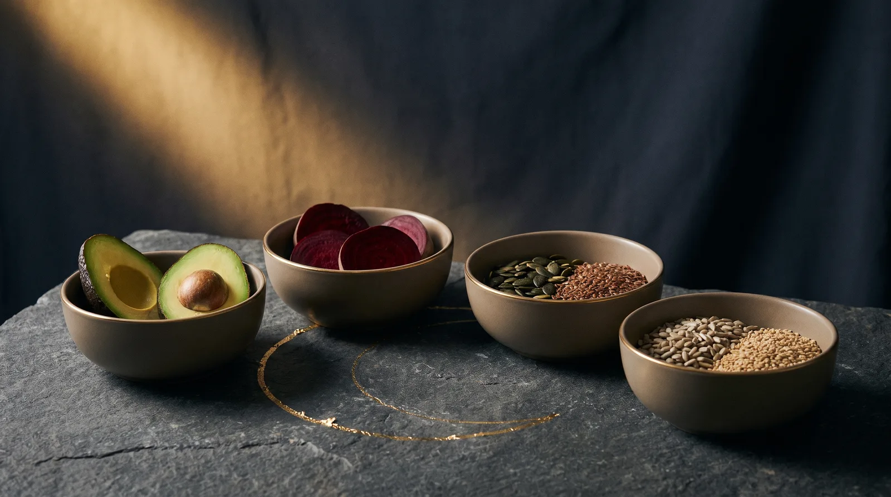
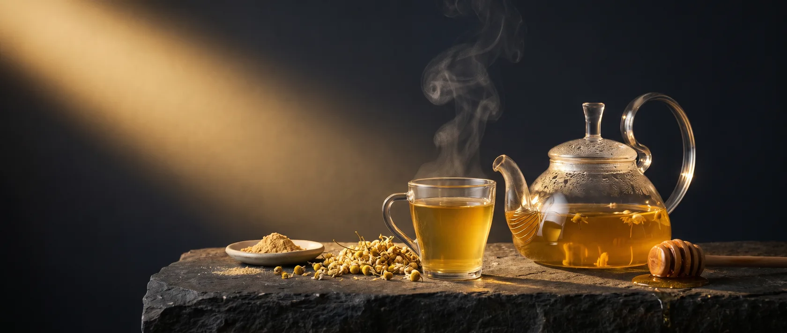
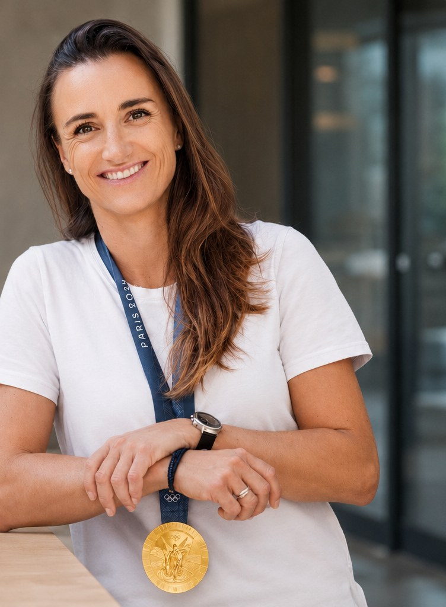

Ernährung und Supplemente, abgestimmt auf deine vier Zyklusphasen.
Dein Stoffwechsel ist nicht jeden Tag gleich. Über den Monat verändern sich Energiebedarf, Blutzucker und Nährstoffbedarf, teilweise um mehrere hundert Kalorien pro Tag. Wer immer gleich isst und trainiert, arbeitet in der Hälfte des Monats gegen den eigenen Körper. Dieser Guide zeigt dir, was in welcher Phase wirklich sinnvoll ist.

Jede Zyklusphase hat ihr eigenes hormonelles Klima, und damit einen eigenen Stoffwechsel. Wenn du weißt, in welcher Phase du bist, weißt du auch, was dein Körper gerade braucht.
Der Körper verliert Blut und damit Eisen. Jetzt zählt: auffüllen statt verzichten.
Der Verbrauch sinkt leicht. Die stärkste Phase für Diäten und harte Trainingsreize.
Die Körpertemperatur steigt leicht an. Darm und Flüssigkeitshaushalt brauchen Unterstützung.
Mehr Energiebedarf, instabiler Blutzucker, kataboler Stoffwechsel. Die anspruchsvollste Phase.
Kein kompliziertes Protokoll, sondern wenige gezielte Anpassungen pro Phase.

Zwei Werkzeuge, die zusammenspielen: ein Tee gegen die akuten Beschwerden und ein kleines Supplement-Set, das eine Woche vorher startet.
Diese Kombination kann Schmerzen und Begleitsymptome wie Übelkeit und Kopfschmerzen lindern, für ein insgesamt besseres Wohlbefinden.
| Supplement | Menge |
|---|---|
| Magnesium | 250 mg |
| Zink | 45 mg |
| Aspirin (ASS) | 80 mg |
| Omega-3 | 1 g |
Aspirin ist ein Medikament, kein Nahrungsergänzungsmittel. Ob es für dich passt, hängt von deiner Situation ab, etwa bei Blutungsneigung, Magenproblemen oder anderen Medikamenten. Bitte vor der Einnahme ärztlich abklären.
Vier feste Ankerpunkte, unabhängig von der Zyklusphase. In der Lutealphase wird das Protein besonders wichtig, weil der Stoffwechsel eher abbauend arbeitet.
Aminosäuren als Startkapital für die Muskulatur.
Bei längeren Einheiten die Energie konstant halten.
Innerhalb von 30 Minuten, damit die Reparatur sofort starten kann.
Die Gesamtmenge zählt, verteilt auf mehrere Mahlzeiten.
„Dein Zyklus ist kein Hindernis. Er ist ein Trainingsplan, den dein Körper jeden Monat neu schreibt."
Du musst nicht alles auf einmal umsetzen. Fang mit einer Sache an: Notiere eine Woche lang, in welcher Phase du bist, und passe nur die Kohlenhydrate an. Alles Weitere baust du Zyklus für Zyklus dazu.

Ich baue jede Woche Reels und Vertiefungen wie diese: die Physiologie hinter dem Gefühl, ehrlich eingeordnet. Kein Hype, keine Wundermittel, nur das, was die Evidenz hergibt.
Folge für mehr auf Instagram →Alle Guides von Dr. Lara Vadlau, jederzeit nachlesbar.
Alle Guides auf einen Blick: lara-wissen.vercel.app